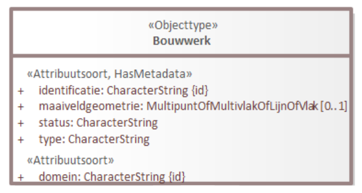

Handleiding ontologie maken en publiceren
Inleiding
Naast UML-informatiemodellen en begrippenkaders maakt Geonovum wellicht in de toekomst ook meer ontologieën. Momenteel is er één ontologie gepubliceerd: die van NEN 3610. Hier is gedocumenteerd hoe dat is gedaan.
Ontologie genereren
De ontologie is gegenereerd uit het NEN3610-informatiemodel op basis van de regels in MIM.
- Input: MIM UML-model
- Output: Ontologie in Turtle (
.ttl) syntax en documentatie van de ontologie in Markdown (.md) syntax (op te nemen in ReSpec-document)
In je UML-project is daarvoor nodig:
- tagged value baseURI op packageniveau
De ontologie is gegenereerd met scripts van Marco Brattinga.
- Scripts staan in de repository NEN3610-werkomgeving
- Het script dat je moet runnen is: convert.sh. Dit kun je lokaal doen (onder Windows moet je dit aanroepen in een batch-bestand) of we kunnen dit in een git workflow zetten zodat het script elke keer wordt uitgevoerd als je een EAP-bestand of MIM-XML-bestand pusht. Jesse Bakker heeft dit laatste binnen IMX-Geo gedaan.
- Het script genereert met een aantal tussenstappen de uiteindelijke ontologie (RDF-bestand, .ttl) en een markdown-bestand (.md) met documentatie, dat je in een ReSpec-document kunt opnemen.
Naast Marco Brattinga hebben Linda, Pano, en Jesse Bakker (Kadaster) kennis van deze scripts.
Regels voor de URI
De URI (in EA: baseURI) is de identifier URL van de ontologie. Het is belangrijk dat deze lange tijd stabiel blijft (dus geen projectnaam, organisatienaam, versieinformatie etc. erin opnemen). Samengevat gelden hiervoor de volgende regels:
- Moet beginnen met
http://modellen.geostandaarden.nl/def/ - Na
/def/volgt een korte naam - Na de korte naam volgt een
# - Geen versie-aanduiding in de URI
Voorbeeld: http://modellen.geostandaarden.nl/def/nen3610#
Note Waarom geen versie
Hierover is veel discussie geweest. In de LinkedData-wereld is het de gewoonte om geen versie in de URL te zetten. De belangrijkste reden hiervoor is dat de URI een identificatie is. Als deze per versie zou wijzigen, zou dat eigenlijk betekenen dat het een nieuwe ontologie is en dat alles dat erin staat een nieuwe betekenis heeft. Dit is bijna nooit echt wat je wilt.
De klasse
Gebouwuit NEN3610:2011 is in essentie nog steeds dezelfde als de klasseGebouwuit NEN3610:2022. Mogelijk is de definitie en daarmee populatie een enigszins veranderd. Dat wil zeggen: misschien zit er tussen beide definities een verschil tussen wat je als een gebouw beschouwt. Maar in essentie bedoel je nog steeds hetzelfde, dus verander je dan niet de identificatie.Een andere reden om geen versie in de URI op te nemen is dat dit voorkomt dat je alle data die de ontologie gebruikt, moet updaten als de URI gewijzigd is vanwege een nieuwe versie van de ontologie.
Kwaliteitscontrole
Controleer het gegenereerde .ttl-bestand op correcte syntax met behulp van een online validator.
Publiceren
De ontologie is gepubliceerd op http://modellen.geostandaarden.nl
Beheerders, oa Linda en Pano hebben de FTP-toegang hiervan.
De ontologie is gepubliceerd in vier bestandsformaten:
- HTML (.html)
- Turtle (.ttl)
- RDF/XML (.rdf)
- JSON-LD (.json)
Het .ttl-bestand is automatisch geconverteerd naar RDF/XML en JSON-LD met behulp van een online conversietool.
Folderstructuur en rootfolder
De folderstructuur op de webserver is als volgt:
/
index.html
.htaccess
/def
/nen3610
/nen36102022 In de root / staat een bestand index.html dat de content bevat die je ziet in je browser als je naar http://modellen.geostandaarden.nl gaat. Dit bestand wordt handmatig beheerd. Het moet worden aangepast als er meer ontologieën bij komen.
In de root / staat verder een .htaccess-bestand. Dat is een webserverscript dat ervoor zorgt dat een verzoek om de ontologie, afhankelijk van de client, de webserver het juiste bestandsformaat laat teruggeven. Als een gebruiker met een webbrowser om http://modellen.geostandaarden.nl/def/nen3610# vraagt, geeft de webserver een html-bestand terug dat de browser kan tonen en de gebruiker kan lezen. Als een gebruiker met een ontologie-editor vraagt om dezelfde URL, geeft de webserver bijvoorbeeld het .ttl-bestand terug.
Het .htaccess-bestand is gemaakt door Linda en Pano en wordt beheerd in github.
Ontologie-bestanden op de webserver
De ontologie-bestanden .ttl, .rdf en .json staan in /def. De ontologie is zowel als bestand met versieloze bestandsnaam en als bestand met versieaanduiding opgeslagen. NEN3610 gebruikt een jaartal, maar semantic versioning is ook toegestaan.
/def
nen3610.ttl
nen3610.rdf
nen3610.json
nen3610-2022.ttl
nen3610-2022.rdf
nen3610-2022.json HTML-bestanden op de webserver
De .html-bestanden staan in twee subfolders, eentje met versieaanduiding en eentje zonder. De versieloze folder bevat altijd dezelfde inhoud als de nieuwste versie.
/nen3610
index.html
/nen36102022
index.html Opname in vocabulary catalogus
En pagina over de NEN3610-ontologie is daarnaast ook op Linked Open Vocabularies (LOV) gepubliceerd, een online catalogus van ontologieën. Dit is aangevraagd via een email naar de beheerders via de contactlink. De beheerders controleren de ontologie en geven tips ter verbetering. NEN3610 staat hier.
FAIR ontologie
Om te zorgen dat de ontologie vindbaar en bruikbaar is, zijn er aanvullende regels. Deze zijn gebaseerd op de regels voor FAIR-ontologieën van Linked Open Vocabularies, de vindplaats van ontologieën waar NEN3610 ook in is opgenomen. Hun regels zijn ook beschreven in een goed leesbare paper. De manier waarop de NEN3610-ontologie is gepubliceerd is hierop gebaseerd.
Metadata
De volgende metadata dient te worden opgenomen in de ontologie:
- Versie-informatie:
owl:versionIRIenowl:versionInfo license(CC-BY)creator, eventueelcontributor,creationDateen (als die bestaat)previousVersionprefix,titleanddescriptionsource: verwijzing naar informatiemodel waar de ontologie op gebaseerd ispublisher: verwijzing naar Geonovum
Vertaling naar het Engels
Het wordt aangeraden om de ontologie te vertalen naar het Engels (dit kan in hetzelfde bestand, door verschillende talige labels aan de klassen en eigenschappen te geven). Voor NEN3610 wordt dit overwogen.
Relatie met andere ontologieën
Het is good practice om de ontologie te relateren aan andere ontologieën, met name aan NEN3610, GeoSPARQL, OWL Time, de Semantic Sensor Network Ontology (SSN), NEN 2660 etc. Voor NEN3610 is dit nog niet gedaan. Hiervoor zijn een aantal standaardrelaties beschikbaar, zoals;
- equivalentClass
- equivalentProperty
- subClassOf
- subPropertyOf
Relatie met andere ontologieën in Enterprise Architect
In Enterprise Architect is het mogelijk om deze relaties aan te geven. De ontologie-generator zet ze dan ook in de ontologie, maar het mechanisme is nog niet gestandaardiseerd in MIM. De Generatie MIM-ontologie is ontwikkeld in het WaU als onderdeel van het IMX-Geo-project. Om aan te geven dat iets uit je model precies hetzelfde is als iets uit een ander model: Tagged value uri bij klassen, attributen en relaties; gevuld met de URI van de ontologie plus de identifier van de klasse of eigenschap in de ontologie (de MIM naam). Dit wordt vertaald naar equivalentClass of equivalentProperty. Om aan te geven dat iets een subklasse of -eigenschap is van een klasse of eigenschap uit een ander model, is er nu nog geen methode.
Voorbeeld relatie met andere ontologie IMX-Geo en NEN3610

De attributen domein en identificatie komen uit NEN3610.
domein heeft Tagged value:
uri = http: http://modellen.geostandaarden.nl/def/nen3610-2022#domein identificatie heeft Tagged value:
uri = http://modellen.geostandaarden.nl/def/nen3610-2022#identificatie